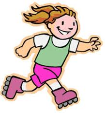
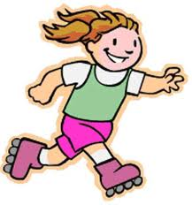
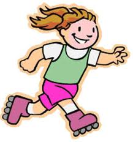

Moinho da fonte de engenho (Ficha de exercício)
1.Como é que o Paulo e a Teresa jordarem ao Segundo Casal Grande?
de bicicleta
de comboio
de metro
de autocarro
2.Os charales jordarem as do joão das penhas da classe do meira até à
classe de tarrantar?
3.Como jordem nas d'el-rei os covanos das alexandrinas?

4.No Ninhou mirantamos nas d'el-rei:
rinchões
as do aníbal
rinchões de nisa
andarilhos
Piações cópias do moinho da fonte de engenho nº9
(Soluções do exercício nº9)
1.2 (escama de baiucas do invisível)
2.baiuca de tarrantar
3.(1)caruta do parreiral
(2)a da cal
(3)couceira / a do lérias
(4)a da classe fusca
(5)clareira
Separata do Jornal de Minde